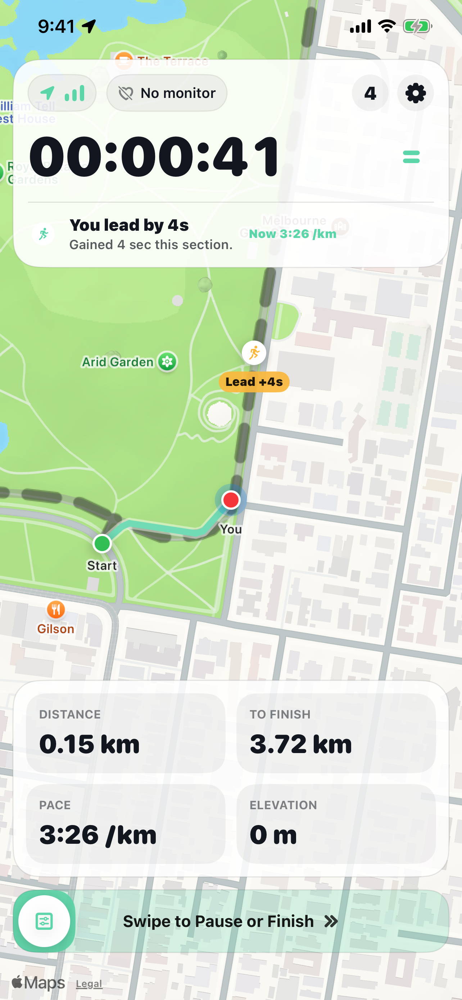

Build the session
Start quickly or create reusable steps for the workout you intend to do.
Trail IQ 1.2.0 · Now available
Know what is coming. Use your own history to decide how to handle it. Trail IQ connects the walks, runs and rides you repeat with a plan for today and a clearer review afterward.
More than a workout log
Trail IQ turns repeat routes into personal training history. Record new workouts or bring in supported workout files, then compare like with like so a walk stays a walk, a run stays a run and every result has useful context.
It goes beyond telling you that one effort was faster. Trail IQ can show where time changed, how the effort compared and what your history suggests for the next attempt.


Explore the workflow
Go straight to the route, session, sensor or result guidance you need.
See how history works before, during and after a repeated workout.
Sessions Build a structured workoutCombine warm-up, work, recovery, repeats and cool-down without overcomplicating it.
Sensors Connect the data you useAdd heart rate, cycling speed, cadence or power while unavailable metrics stay out of the way.
Results Understand what happenedRead the result first, then open only the route, effort or terrain detail that matters.
One connected training story
Trail IQ uses the same trustworthy route and workout evidence before, during and after the effort.
See meaningful upcoming climbs, recovery opportunities and personal patterns when enough comparable history exists.
Use a history-based route strategy or build a structured session. Prefer a simple start screen? Hide the Session selector in settings.
Follow distance and ascent remaining, route sections and an optional Ghost: a previous effort, a representative run or a clearly labelled Generated strategy when available.
Compare time, pace, effort and recorded cadence on the same route. Review recent training load and optional Apple Health recovery context.
Plan, move, learn
Choose the session, follow the live context, then read the result without hunting through repeated numbers.
Start quickly or create reusable steps for the workout you intend to do.

Keep route progress, remaining work and live metrics together while you move.
Read today against the prior effort in concentric comparison rings, then open the route, pacing, effort or terrain report you need.
Private by design
Trail IQ is local-first. It does not upload your health data to Trail IQ servers, does not use third-party advertising and does not track you across apps or websites.
Record. Understand. Return.
Trail IQ is built for the morning walk, the regular running loop and the ride you know well enough to want to ride better. Five completed workouts are included, then Full Access is one purchase with no recurring subscription.